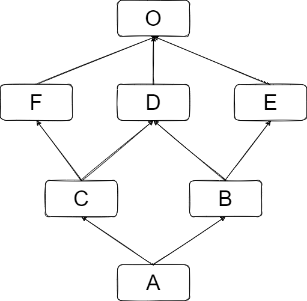

Super函数和mro算法
super()作为在python中常被使用到的一个方法而言，具有一些有趣的特性，本文可以看作super()的一个考古，主要包括以下几个部分：
super()的定义和用法- 构造
__mro__属性中类继承顺序线性化的算法 - 提供了一个
super()的简单实现
super()的定义和用法
首先提供一个super(type, object-or-type)的定义：
在
object-or-type中__mro__指定的搜索路径中,返回type后的下一个类对象的代理。
例如object-or-type的__mro__指定的查找路径为D->B->C->A->object, 并且type的值为B，则super(type, object-or-type)将返回路径中B的下一个类C的代理。
关于未绑定的一个问题
super()的两个参数都是可选参数，如果省略第二个参数，则返回一个未绑定的超类对象。在这个角度中，super()返回的代理对象与super()的第二个参数绑定。
这一点可以用以下的代码测试：先构造两个类A，B，并初始化
class A():
def __init__(self):
self.s = 'a'
def method(self):
print('obj A')
return self.s
def __repr__(self):
return 'A: {}'.format(self.__class__.__name__)
class B(A):
s = 'B'
def __init__(self):
super().__init__()
self.s = 'b'
def method(self):
print('obj B')
super().method()
return self.s
def __repr__(self):
return 'B: {}'.format(self.__class__.__name__)
a = A()
b = B()
此时执行super(B)将返回一个未绑定的类
>>> super(B)
<super: <class 'B'>, NULL>
而super(B,B)则会返回
>>> super(B, B)
<super: <class 'B'>, <B object>>
此时输出super(B).method在一些说明中会指出将返回一个未绑定的方法（像<unbound method A.method>）,但在当前的实现中，将是如下状况
>>> super(B).method
AttributeError("'super' object has no attribute 'method'")
而同时并不像博客中所说，super(B,B)的行为现在也有所不同
>>> super(B, B).method
<function A.method at 0x059976A0>
# 而在调用这个函数的时候，可以通过手动将一个对象为参数来使其正确执行
>>> super(B, B).method(b)
B
未绑定的代理对象，必须要指定一个对象绑定，才可以继续正常使用，例如
>>> super(B).__get__(b, B)
<super: <class 'B'>, <B object>>
# 这个对象与super(B, b)相同
>>> super(B).__get__(b, B).method()
b
Guido对这一个用处有一个回应：
Thanks for proposing this – I’ve been scratching my head wondering what the use of unbound super() would be. :-) I’m fine with killing it – perhaps someone can do a bit of research to try and find out if there are any real-life uses (apart from various auto-super clones)?* — Guido van Rossum
有点茴字的四种写法的味道了。
super()在python3
python3 中super()是最通常使用的一种方式， super()通常（只能被）使用在class定义中，用来返回一个父类的代理.
这个用法起初在PEP3135提出，本是基于DRY原则为了避免在原本的用法中出现的两个问题：1.原本super(class_name,self)的用法会在类定义的多个地方重复类名，如果类名改变，则多处的class_name也需要改变，这样就容易遗漏。2.在使用类装饰器的class中类名指定的类并不是原本方法所在的类对象，这样造成的行为与期望产生差距
Guido原本设想super作为一个keyword，然后使用cell来实现super可以指代当前的类，但之后他认为这个idea“too magic”，重新赞成使用super()来实现，并需要一个magic变量__class__来作为一个妥协方法
这样当在类中使用super变量时，会寻找__class__来组合闭包，当你在全局范围类将super重命名为s，然后在类中使用s()，就会出现异常RuntimeError: super(): __class__ cell not found，但依然可以如同通常方式一样工作。另外一个有趣的地方在于，只要在s()之前引用__class__或super(仅仅只需要在s()之前出现)，s()就会如同super()一样正常工作。
super()被广泛使用得以避免了一个问题：super在使用中会被误用为super(type(self), self)或super(self.__class__, self)，这时，在以下的情况会进入无限循环
class A:
def method(self):
print("A")
class B(A):
def method(self):
super(type(self), self).method()
print("B")
class C(B):
def method(self):
super(C, self).method()
print("C")
C().method()
在这里C().method()，调用了super(C, self).method()，此时调用的是B的method()方法，但其中的 type(self)参数，所返回的类依然是C，而不是期望中的B，这样super(type(self), self) 依然是B类自身。
__mro__的构造和C3线性化方法
在python2.3之前的版本中，__mro__基本遵循继承顺序自左向右深度优先的属性构造，而在python2.3中引入了新式类，所有的类继承链的根部均为object对象，这样就很容易构造一个钻石形的继承图，例如：
class A(object):
def __getattribute__(self, name):
pass
class B(A):
def __getattribute__(self, name):
pass
class C(A):
def __getattribute__(self, name):
pass
class D(B, C):
def __getattribute__(self, name):
pass
构造的继承图如下
按python2.2中的线性化方法，类D的mro顺序为D->B->A->C->A。这样，当在D中使用__getattribute__()方法时，super().__getattribute__()调用B中的__getattribute__()方法，然后调用A.__getattribute__()，由于A的__getattribute__()直接继承自object，而object作为根类并不会调用super(),这样C的__getattribute__()方法就被忽略了。
在出现这样钻石继承图的情况中，一个替代的解决方法是自己组织调用层次来避免如以上的情况（或者重复调用A中方法的情况）。
# 一个替代方法
class A:
def method(self):
pass
class B(A):
def _method(self):
# 这里写B独有的方法部分
pass
def method(self):
self._method()
A.method(self)
class C(A):
def _method(self):
# 这里写C独有的方法部分
pass
def method(self):
self._method()
A.method(self)
class D(B, C):
def _method(self):
# 这里写D独有的方法部分
pass
def method(self):
self._method()
B._method(self)
C._method(self)
A.method(self)
这种办法一方面将一个完整的方法分割到了两个函数中，对于方法的理解存在负面影响。更加严重的是，这个方法导致在实现D的method()方法时，必须了解类B，C的实现，并协调A的method()方法，这样原本为封装信息的继承方法造成了信息泄露；同时将继承结构的细节与D类绑定了，这样若之后要对B或C类的继承方式做修改时，需要同时修改它们的子类。
在python2.2及之前的版本中，钻石型继承并不常出现，而在2.3版本中引入了新式类–一个关键点在于所有的类继承自object–造成了钻石形的继承关系出现次数大大增加。这样，引入一个新的线性化算法就变得必要了。[1]
C3线性化算法
前置的约定：
-
我们用ABCD…N来指代由A->B->C->D…->N的mro，其中A为mro的头部，其余作为尾部
-
设定A + B…N = AB…N
-
用L(C)来表示C的线性化结果
那么，C3算法可以被描述为以下几条原则：
-
设一个类C，C线性化后的mro为C与对C的父类mro和C的继承顺序构造的一个mro做合并操作的结果之和， 用公式描述则是：
L(C) = C + merge(L(A), L(B), ..., AB...) -
根类的mro为它自己, 也就是有
L(O) = O -
merge的算法是: 在merge的参数中，先选择一个mro的头部，如果这个头部不在之后所有的mro的尾部中，那么就将这个头加入merge结果的mro中，并在其他参数的mro中去除这个头部， 否则选择下一个mro。重复这个过程，直到merge中没有元素，或者无法找到头部（此时抛出一个异常）。
算法本身描述比较抽象，只要用一个例子说明，就会很容易理解：
先构造一系列类：
O = object
class F(O): pass
class E(O): pass
class D(O): pass
class C(D,F): pass
class B(E,D): pass
class A(B,C): pass
这些类存在着如下图的继承关系：

此时根据算法有：
# O 的mro为O本身
L(O) = O
L(F) = F + merge(L(O), O)
= F + merge(O, O)
= F + O
= FO
L(E) = EO
L(D) = DO
继续：
L(C) = C + merge(L(D), L(F), DF)
= C + merge(DO, FO, DF)
# 先选择DO的头部D，D不在FO的尾部中，D同时是DF的头部，
# 所以将D作为merge结果的头部，并且在参数中去掉D
= C + D + merge(O, FO, F)
# 同理
= C + D + F + merge(O, O)
= CDFO
L(B) = BEDO
L(A) = A + merge(L(B), L(C), BC)
= A + merge(BEDO, CDFO, BC)
= A + B + merge(EDO, CDFO, C)
= A + B + E + merge(DO, CDFO, C)
= A + B + E + C + merge(DO, DFO)
= A + B + E + C + D + merge(O, FO)
= A + B + E + C + D + F + merge(O, O)
= ABECDFO
可以看到C3线性化方法中，E类相比类C在继承顺序上更接近与根O，但是mro中位置却在C之前。C3线性化的一个优点在于整个继承结构中的所有的类的mro均是单调的，也就是说C3线性化方法具有单调性。
super()实现
使用者通过super()返回的代理对象来获取对应对象的属性，可以通过将super()实现为一个描述器来做到这一点。
class new_super:
def __init__(self, type=None, object=None):
if type is None:
# super利用__class__组成闭包，这时__class__指向定义时所在的类，而不是运行时
# 在具体的实现中，__class__在编译时被写入闭包
if __class__ is None:
raise RuntimeError("super(): no arguments")
self.__type__ = __class__
else:
self.__type__ = type
self.__object__ = object
def __get__(self, obj, type=None):
# 如果没有指定第二个参数，可以用__get__方法来与obj绑定
if type is not None and self.__object__ is None:
return new_super(self.__type__, obj)
else:
return self
def __getattr__(self, attr):
if isinstance(self.__object__, self.__type__):
starttype = self.__object__.__class__
else:
starttype = self.__object__
mro = iter(starttype.__mro__)
for cls in mro:
if cls is self.__type__:
break
for cls in mro:
if attr in cls.__dict__:
x = cls.__dict__[attr]
if hasattr(x, '__get__'):
x = x.__get__(self.__object__)
return x
raise AttributeError